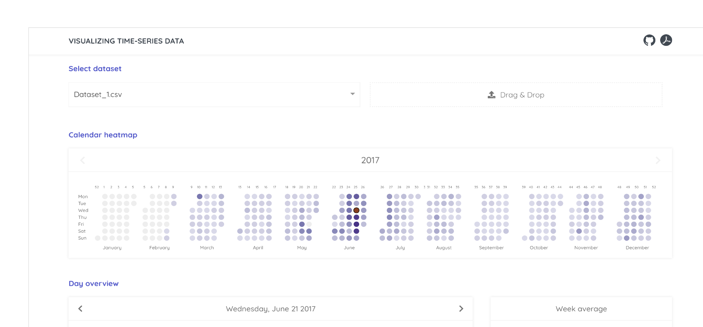
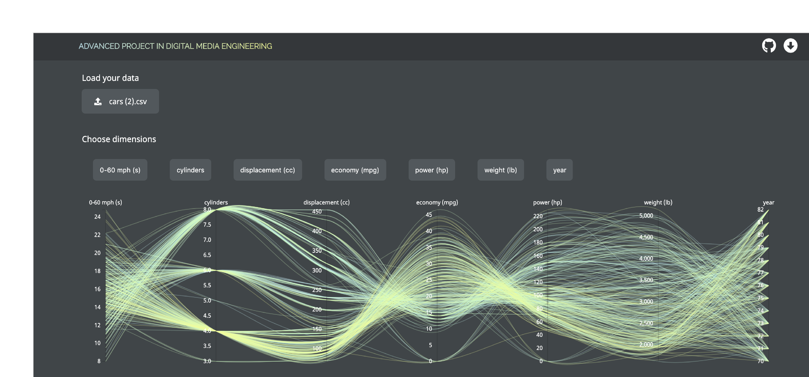
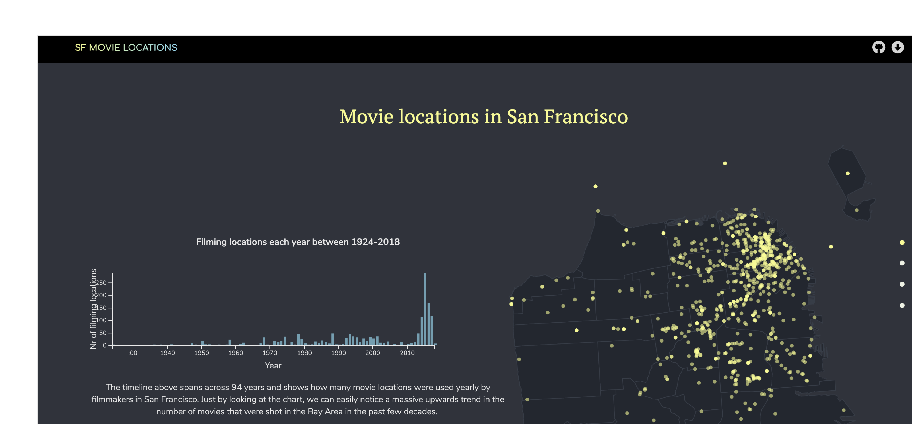
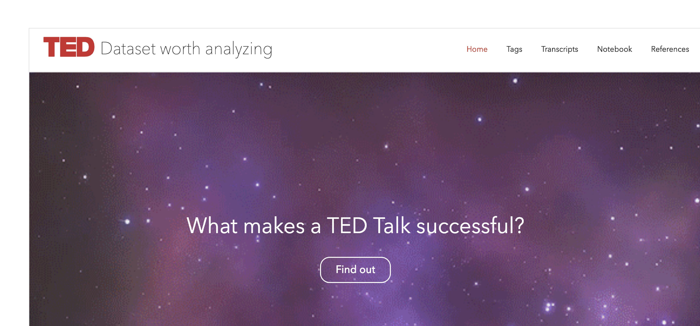

Hi,
I'm Diana, a front-end developer living in Copenhagen.
I UX design and data visualization.
Visual Exploration of Self-Tracked Time Series
A web application that generates interactive temporal visualizations based on quantified-self data provided as input
See more

Smart Brushing for Parallel Coordinates
A web application that parallel coordinates given multidimensional datasets as input and facilitates the discovery of patterns using brushing techniques
See more

Film Locations in San Francisco
Geo-mapping the filming locations of movies shot in SF starting from 1924 onwards
See more

Sentiment Analysis on TED Talks
Data analysis conducted on official transcripts for identifying what exactly makes a TED Talk popular
See more
